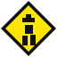

GolfButLouder_2available for a second chance
THE ROSTER / THE EMOTIONAL DAMAGE
No buddies found. Try their real name.
Checking buddy list…

livgolf4sale.com · independent satire
the future of golf is currently typing…
THE ROSTER / THE EMOTIONAL DAMAGE
No buddies found. Try their real name.